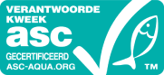
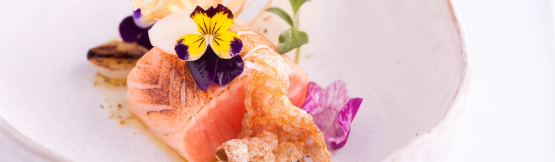
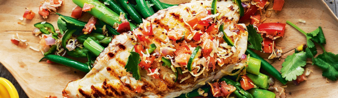
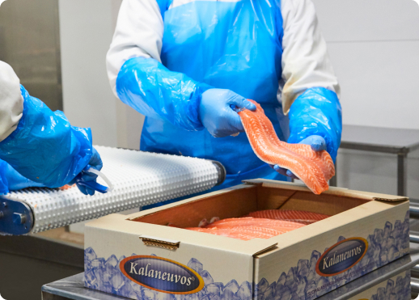

Main fish products
The fish is of premium quality due to aquaculture and harvest in accordance to ASC certified criterias and with optimal combination of fish feed during the farming syclus

TROUT WHOLE ONCORHYNCHUS MYKISS

TROUT FILLET ONCORHYNCHUS MYKISS
SALMON WHOLE SALMO SALAR

SALMON C-CUT FILLET SALMO SALAR

WHITEFISH COREGONUS LAVARETU

WHITEFISH FILLET WITHOUT SKIN AND SCALED

FARMED BROWN TROUT SALMO TRUTTA

FARMED BROWN TROUT FILLET SALMO TRUTTA
View all products
Our brochures
Chinese version download
English version download


Salmonbellies AS
Salmonbellies and Lyxfish commit to sell at NO higher prices then quoted from our partner Kalaneuvos
Salmofan and quality
Color test, salmonbellies ensures clients demand are met and that producer delivers accordingly.

Kalaneuvos Oy’s product selection includes fresh, smoked, cold smoked, frozen, slightly salted and marinated products. We provide fish products in several variants – caviar, whole fish, fillets, slices, portions, cubes, boneless and skinless fish. We have the ISO 9001 Quality Management System and the FSSC 22000 Food Safety System Certification, which provide a framework for effectively managing our organisation’s quality and food safety responsibilities. We also have the ISO 14001 Environmental Management System.
WE ARE MSC CERTIFIED (MSC-C-55443). LOOK FOR THE BLUE MSC LABEL
WE ARE ASC CERTIFIED (ASC-C-01179). LOOK FOR THE AQUA GREEN ASC LOGO

Fish by Kalaneuvos are caught or farmed primarily in the following locations
Trout
Farmed on the Finnish coast, in Åland and in Sweden
Salmon
Farmed on the Lofoten Islands region of Northern Norway and on the north side of the Lofoten Islands
Whitefish (farmed)
The Archipelago Sea
Whitefish (wild)
Lake Lappajärvi, Lake Kyrösjärvi, the Archipelago Sea, Åland
Whitefish (Canada)
The Canadian Great Lakes
Baltic herring
The Bothnian Sea and the Archipelago Sea
Vendace
Lake Puruvesi Lake Saimaa Lake Pyhäjärvi in Säkylä
Northern pike
Northern pike
Northern pike
Lake Lappajärvi Lake Kyrösjärvi Lake Pyhäjärvi in Säkylä
Pike perch (freshwater)
Lake Lappajärvi Lake Pyhäjärvi in Pirkanmaa Lake Kyrösjärvi Lake Vesijärvi in Lahti
Pike perch (sea)
The Vaasa sea area, the Turku Archipelago
Perch (freshwater)
Lake Lappajärvi Lake Pyhäjärvi in Pirkanmaa Lake Kyrösjärvi
Perch (sea)
Kvarken
Brown trout (farmed)
Åland
Arctic char (farmed)
Sweden
Mackerel
Sweden
Cod
Sweden and Denmark area, the North-East Atlantic
Ready to eat products
The fish is of premium quality due to aquaculture and harvest in accordance to ASC certified criterias and with optimal combination of fish feed during the farming syclus
TROUT WHOLE ONCORHYNCHUS MYKISS
TROUT FILLET ONCORHYNCHUS MYKISS
SALMON WHOLE SALMO SALAR
SALMON C-CUT FILLET SALMO SALAR
WHITEFISH COREGONUS LAVARETU
WHITEFISH FILLET WITHOUT SKIN AND SCALED
FARMED BROWN TROUT SALMO TRUTTA
FARMED BROWN TROUT FILLET SALMO TRUTTA
View all productsOur brochures
Chinese version download
English version download
Receipes

Wester Ross seared salmon loin, fennel pollen and sweet onion
This delicious starter by Michelin-starred chef Lisa Allen has many elements that come together to create a striking dish, bursting with vibrant colours. To give the salmon a smoky, charred flavour the chef finishes the dish by...

Wester Ross seared salmon loin, fennel pollen and sweet onion
This delicious starter by Michelin-starred chef Lisa Allen has many elements that come together to create a striking dish, bursting with vibrant colours. To give the salmon a smoky, charred flavour the chef finishes the dish by...
View all products

Why trout is the new salmon
Trout tend to more firm in the muscle tissue then salmon when cooking, it grows faster in aquaculture then salmon and we have ready trout for delivery all year around to the markets
Markets

Salmonbellies focuses on Switzerland, and Israel by all-in kosher products on demand with rabbinical supervision. But just to let you know that our products are approved for import to China, so alot of focus is streamlined towards the Asian markets herein; Japan, China, Taiwan, South Korea, Thailand, The Philippines, Vietnam and India. Our main focus for smolt sales is towards Norwegian trout fish farmers, and Canada for rainbow trout roe. The team Salmonbellies is always open to help and assist with our competence and skills within aquaculture in other countries and markets. Mr. Alexander Refsnes have close ties to researchers in Norway on fish health and fish pathology related to aquaculture of trout and salmon from the time he studied for his degree in Aquaculture, and where he discovered his new passion for the aquaculture industry on salmon species, and feed regimes.
News
Expo global 2019
The team of Salmonbellies enjoyed the seafood Expo global 2019, and thank you to all participants who filled in our questionnaire during our many meetings in the crowdy melting pot in Bruxelle this year.
A new company in Minsk
4th. July 2019, team of Salmonbellies launches a new company in Minsk, Belarus namely "Lyxfish CJSC" this company will act as Scandinavia`s fish farmers gateway to Belarus export markets, with the main focus on trout and salmon products.
Salmonbellies AS
Trout is the new salmon

Kosher per demand
Copyright SalmonBellies.no 2019, All Rights Reserved